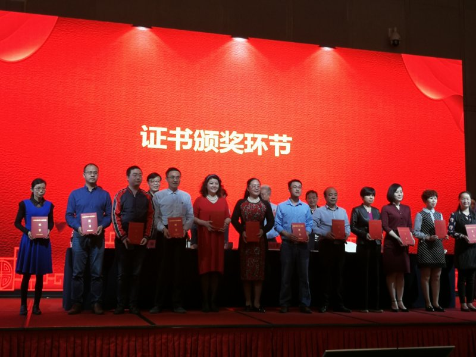

教 学 动 态：
《网页设计》精品在线开放课程获省级认定
新闻类别：教学快讯 来源：数媒教研室 发布时间：2019-04-23 18:00:00
接省教育厅《关于公布2019年省级精品在线开放课程认定结果的通知》（赣教高字〔2019〕32号），我校信息与计算机工程学院梁莉菁老师主持制作的精品在线开放课程《网页设计》被认定为2019年省级精品在线开放课程（本科）。
这次会议在中国慕课大会结束不久后召开，是江西省高校落实全国、全省本科教育工作会议和中国慕课大会的一项具体行动和实际举措。会议以“我选 我学 我共享”为主题，旨在推进信息技术与教学深度融合，推动全省高校智慧教学和课堂教学改革。近年来，我省高度重视慕课建设，积极推动线上课程共享，取得明显成效。目前立项建设233门省级精品在线开放课程，52门共享计划课程。其中98门课程完成建设并上线运行，22门课程通过国家认定。另外，有4个虚拟仿真实验教学项目通过国家认定。同时，充分发挥江西省高校课程资源共享管理中心作用，出台普通高校校际学分认定和转换改革试点举措,大力推动在线开放课程的跨校、跨专业互选和学分互认。目前，全省高校注册学生用户数突破50万人，选修在线开放课程超过100万人次。
我校梁莉菁老师主持的《Flash动画设计与制作》精品在线开放课程是省级首批立项首批上线课程，在此次盛会上终于获得省级认定证书。
